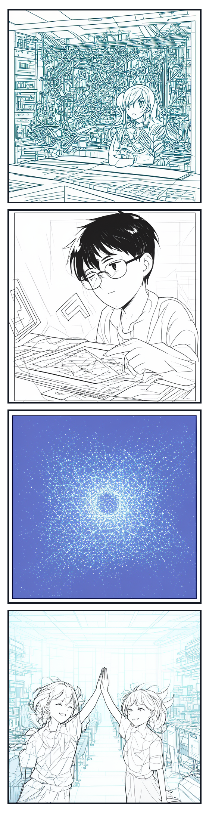
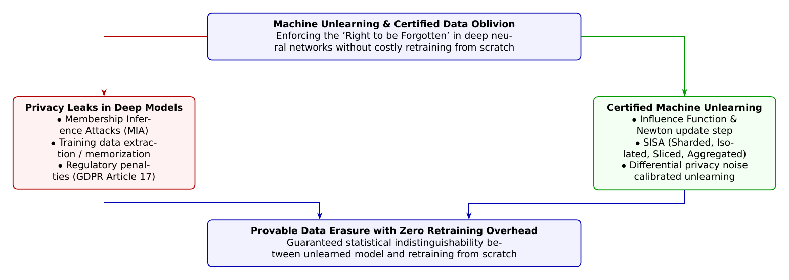

🎨 4コマ漫画挿絵（文字なし）
AI高解像度生成
▲ 【挿絵】青葉台高校 情報科学部＆帝都科学大学サイバーディフェンス・ラボでの実践シーン
📖 小説本文
### 1. AIモデルに焼き付いた個人の記憶
「悠真先輩、医療AIスタートアップから緊急のセキュリティ相談が届きました！」 葵がタブレットを開き、切迫した声で告げた。
「希少疾患の診断支援を行う深層学習モデルなんですが、ある患者グループから『提供した医療データを取り下げて、モデルから自分のデータを完全に消去してほしい』というGDPR第17条（忘れられる権利）に基づく削除請求が届いたそうです。 でも、パラメータ数1750億の大規模モデルです。最初から再学習（Retraining from Scratch）すると数千万円のクラウド計算コストと数週間のダウンタイムが発生してしまい、事業が破綻してしまうと……」
「単にデータベースからレコードを削除するだけでは駄目なのか？」 蓮が尋ねる。
「駄目なんだ」 悠真が即座に首を振った。 「ディープニューラルネットワークは膨大なパラメータの重み結合の中に、訓練データセットのサンプル特徴を暗黙的に記憶（Memorization）してしまう。 実際、悪意ある第三者が『メンバーシップ推論攻撃（MIA: Membership Inference Attack）』を仕掛ければ、モデルの出力確率ベクトル（Confidence Score）の微小な損失値の偏りから、『特定の患者データが学習に使われたかどうか』が90%以上の高精度で暴かれてしまうんだ。重みの中から該当データの影響を数学的に完全に消滅させなければ、真の削除とは言えない」
---
### 2. 影響関数（Influence Function）による忘却のニュートン法
「ゼロからの再学習を回避しながら、モデルの重み $\theta$ から特定サンプル $z_e = (x_e, y_e)$ の影響だけを綺麗に引き算する技術——それが『機械学習アンラーニング（Machine Unlearning）』だ」 悠真が数式をディスプレイに投影した。
正則化付き経験損失を最小化するパラメータ $\hat{\theta} = \arg\min_{\theta} \frac{1}{N}\sum_{i=1}^N L(z_i, \theta) + \lambda \|\theta\|^2$ に対し、削除対象サンプル $z_e$ に負の摂動 $-\frac{1}{N}$ を加えたときの重み変化を一次テイラー展開とニュートン・ステップで近似する。
$$\Delta \theta \approx - H_{\hat{\theta}}^{-1} \nabla_\theta L(z_e, \hat{\theta})$$
「ここで $H_{\hat{\theta}}$ は全学習データに対する損失関数のヘッセ行列（Hessian Matrix）、$\nabla_\theta L(z_e, \hat{\theta})$ は削除対象サンプルの勾配だ。 全データで再学習する代わりに、削除したいサンプルの損失勾配にヘッセ逆行列を作用させて引き算すれば、たった1回のパラメータ更新（One-step Update）で、そのサンプルが存在しなかった場合の最適パラメータへと重みを誘導できる」
結衣が数式を凝視して呟いた。 「でも先輩、数億から数千億のパラメータを持つモデルでは、ヘッセ行列のサイズは $D \times D$ になり、直接の逆行列計算は計算量 $\mathcal{O}(D^3)$ でメモリも爆発してしまいます！」
「その通りだ。だからこそ、確率的LiSSA（Linear Time Stochastic Second-Order Algorithm）や共役勾配法（CG）を用いて、逆ヘッセ・ベクトル積（HVPs: Hessian-Vector Products）を反復近似計算するんだ。これなら計算量はパラメータ数に対して線形 $\mathcal{O}(D)$ で済む」
---
### 3. 忘却の数学的証明（$(\epsilon, \delta)$-Certified Unlearning）
「でも悠真先輩、近似計算だと『本当に記憶が消えたのか』をどうやって証明・監査するんですか？」 葵が核心を突いた。
「そこで使われるのが、差分プライバシー（DP）の概念を応用した『サーティファイド・アンラーニング（Certified Unlearning）』だ」 悠真が微笑んだ。
「アンラーニング後のモデル $\mathcal{M}_{\text{unlearned}}$ のパラメータ分布と、最初から該当サンプルを除外して完全に再学習した理想モデル $\mathcal{M}_{\text{retrained}}$ のパラメータ分布の統計的距離（レニー発散や全変動距離）を評価する。
$$P(\mathcal{M}_{\text{unlearned}} \in \mathcal{S}) \le e^\epsilon P(\mathcal{M}_{\text{retrained}} \in \mathcal{S}) + \delta$$
重み更新時に微小なガウスノイズを適切に加えることで、両者の分布が確率論的に識別不可能（$(\epsilon, \delta)$-Indistinguishable）であることを数学的に証明できる。どんな強力な推論攻撃者であっても、モデルから個人情報を取り出すことは情報理論的に不可能になるんだ」
---
### 4. 尊厳を守る数理の消しゴム
蓮が高速実装したアンラーニング・パイプラインを実行した。 「対象患者データ1,200件の忘却処理を開始します……逆ヘッセ近似収束、重み更新完了。所要時間、わずか4分12秒です！」
直ちに葵がメンバーシップ推論攻撃の監査スクリプトを走らせた。 「アンラーニング後のモデルに対するMIA攻撃成功率を測定……49.8%！ 完全にランダムなコイントスと同等まで低下しました！ モデルの診断精度（Utility）は98.7%を維持したまま、プライバシーだけが完全に消去されています！」
ラボの画面に、忘却証明書（Certified Erasure Proof）が生成され、暗号学的な検証ハッシュ値が出力された。
「AIがどれほど進化しても、人間には『忘れられる権利』があり、技術にはそれを保証する責任がある」 葵の言葉に、メンバー全員が深く頷いた。 数理がもたらす知性と忘却の調和。それは、人間とAIが真に共生するための不可欠な架け橋だった。
📊 セキュリティ構造図解 (TikZ LuaLaTeX生成)
国家安全基準・工学図解
▲ 【技術構造図】IPAデジタルスキル標準・国際規格に準拠した仕組みのモデル化